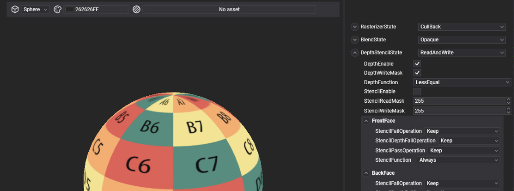

Render Layers

A render layer (RenderLayerDescription) groups materials that are drawn the same way. It sets when they are drawn relative to other layers, how the objects inside are sorted, and the fixed-function state of the draw: culling and fill mode, blending, and depth and stencil testing. Transparent materials go in a blending layer, wireframe or stencil tricks in a layer of their own.
Render layers and materials
Every material references one render layer through its LayerDescription. A new render layer has no effect until you assign it to materials.
Default render layers
The Evergine.Core package includes five render layers. Layers are drawn in increasing Order, and objects inside a layer are sorted by SortMode:
| Layer | Order | Sort | Cull | Depth write | Blending | Use for |
|---|---|---|---|---|---|---|
| Skybox | -1 | Front to back | None | No | None | The sky, drawn first behind everything. |
| Opaque | 0 | Front to back | Back | Yes | None | Solid surfaces. The default layer of materials. |
| Alpha | 2 | Back to front | Back | No | Premultiplied alpha (One, InverseSourceAlpha) |
Transparent surfaces such as glass and water. |
| AlphaDoubleSided | 2 | Back to front | None | No | Premultiplied alpha | Transparent surfaces seen from both sides, such as leaves and fabric. |
| Additive | 3 | Back to front | None | No | Additive (One, One) |
Glows, fire, sparks and light effects. |
All five test depth with GreaterEqual, because Evergine uses a reversed depth buffer. Opaque objects are sorted front to back so that hidden pixels fail the depth test early; transparent ones back to front so that they blend in the right order.
Tip
The post-processing graph runs after every layer with an order below its LayerOrder, 10 by default. A UI layer with an order above 10 is drawn after post-processing and stays unaffected by it.
Render layers are assets with their own editor, the RenderLayer Editor.